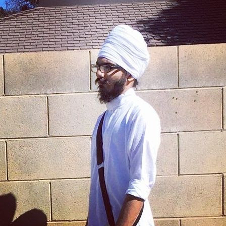

<div id="about-container">
    <div id="about-container-inner">
        <!-- <i class="fas fa-camera"></i> -->
        <!-- <i class="fas fa-address-card"></i> -->
        <app-header></app-header>
        <div class="about-content">
            <div class="banner">
                <h2 class="drop-shadow">About Us</h2>
                <p class="drop-shadow">This assignment was created by Akaljot Gujjar</p>
                <p class="drop-shadow">It was created for IS183 at CSUF</p>
                <button class="btn btn-primary drop-shadow">Learn More</button>
            </div>
        </div>
        <div class="top-section box-shadow">
            <div class="top-inner-section">
                <div class="pic-container">
                    
                </div>
                <div class="bio-description">
                    <h2 class="h2-header"><u>About Me</u></h2>
                    <p class="p-white">I am a student attending California State University, Fresno (Fresno State). I am currently in my third year at Fresno State, graudating in Spring of 2021. I am majoring in Business Administration with an emphasis in Information Systems (IS). Some of my favorite topics I like are programming, cybersecurity and management. </p>
                    <p class="p-white">Some of my hobbies are learning new things, hanging out with friends, digital art and watching interesting shows. My favorite shows right now are The Expanse and Witcher. My two go-to café shops are Starbucks and Teazers. I love dogs, mostly German Shepards. I have two German Shepards, Lucky Jr. and Duke (Pictures of them are below).</p>
                </div>
            </div>
        </div>
    </div>
</div>